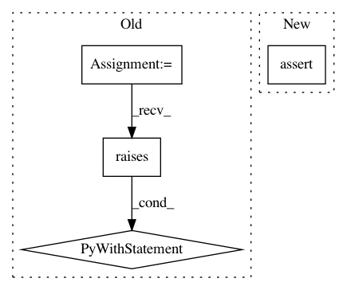

b08626288e9e3be5c9f9cf8ffae0bd70be79281c,lifelines/tests/test_estimation.py,TestMixtureCureFitter,test_exponential_data_produces_correct_inference_for_both_cure_and_non_cure_fractions,#TestMixtureCureFitter#,4860
Before Change
assert abs(fitter.lambda_ / scale - 1) < 0.01
assert abs(fitter.percentile(0.6) - scale * np.log(2)) < 0.01
with pytest.raises(ValueError, match="Percentile must be larger than the cure fraction"):
fitter.percentile(0.19)
After Change
assert abs(fitter.lambda_ / scale - 1) < 0.01
assert abs(fitter.percentile(0.6) - scale * np.log(2)) < 0.01
assert fitter.percentile(0.19) is np.inf
In pattern: SUPERPATTERN
Frequency: 3
Non-data size: 4
Instances
Project Name: CamDavidsonPilon/lifelines
Commit Name: b08626288e9e3be5c9f9cf8ffae0bd70be79281c
Time: 2020-02-18
Author: noah@volantio.com
File Name: lifelines/tests/test_estimation.py
Class Name: TestMixtureCureFitter
Method Name: test_exponential_data_produces_correct_inference_for_both_cure_and_non_cure_fractions
Project Name: scikit-image/scikit-image
Commit Name: 3885b3a792847ca2c729fbe0f834fec4245e4546
Time: 2020-07-01
Author: 35759308+OGordon100@users.noreply.github.com
File Name: skimage/filters/tests/test_thresholding.py
Class Name:
Method Name: test_otsu_one_color_image
Project Name: IBM/AIF360
Commit Name: f62f05eee813647b8ebbf95c13f76d42ddab7036
Time: 2020-02-19
Author: hoffman.sc@gmail.com
File Name: aif360/sklearn/tests/test_datasets.py
Class Name:
Method Name: test_usecols_dropcols_basic